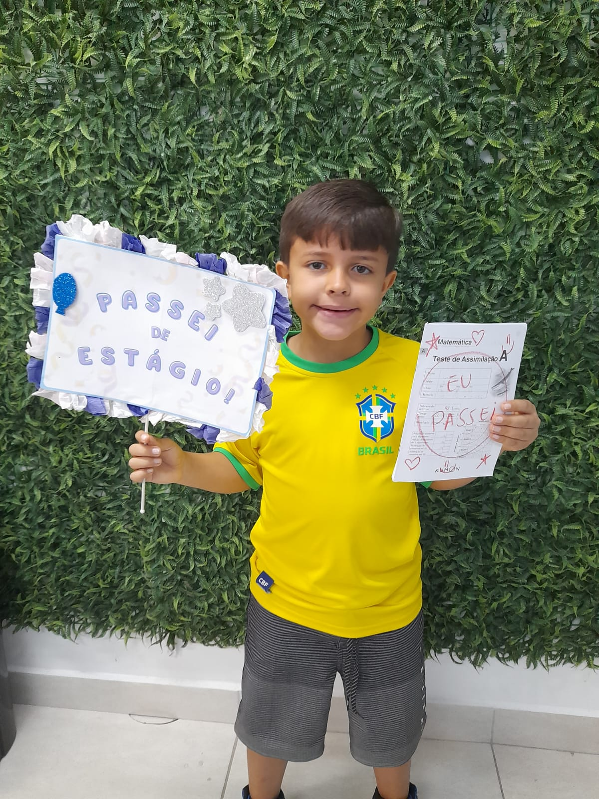
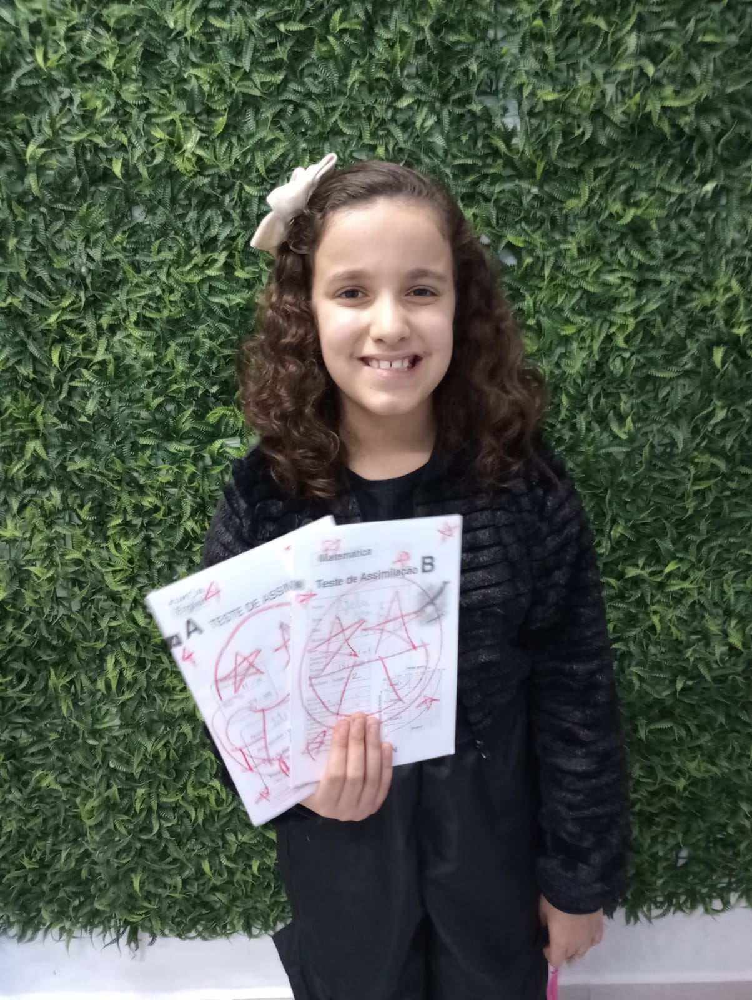
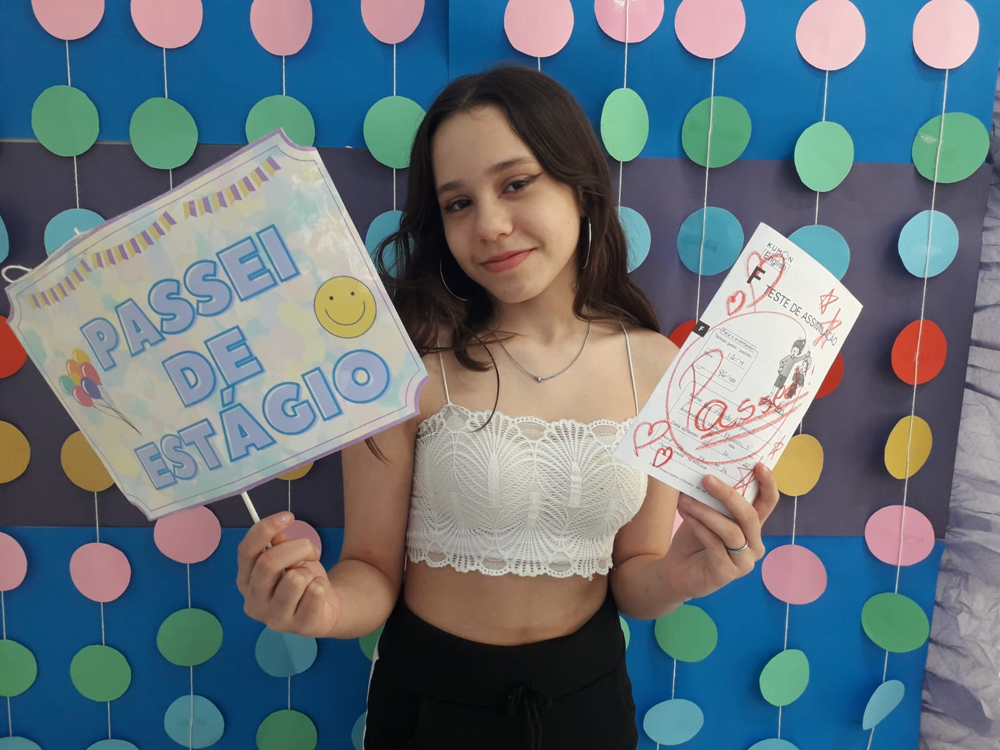

-
Arthur
- Mat
Início no Kumon: 27/03/2023
Matéria: matemática
Série escolar: 2 ano
Estágio inicial: 4A
Estágio atual: B -
Stela
- Mat
- Ing
- Port
Início no Kumon: 26/09/2022
Matérias: Inglês, Português e Matemática
Série escolar: 4 ano
Estágios Iniciais:
Mat: 3A
Port: 3A
Inglês: 7A
Estágios atuais:
Mat: C
Port: CI
Inglês: B -
Lara
- Ing
Início no Kumon: 11/02/2019
Matéria: Inglês
Série escolar: 6 ano
Estágio Inicial: 7A
Estágio atual: G